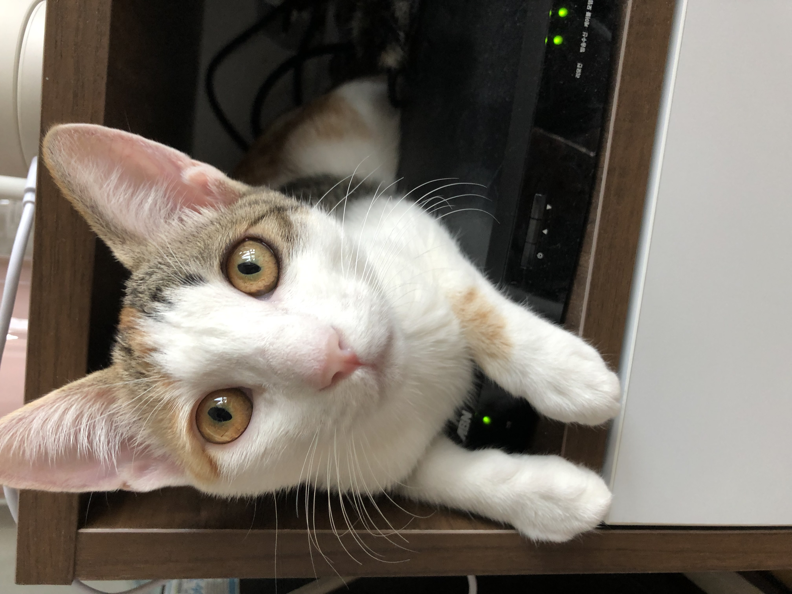

살구는 캔보다 바삭한 사료를 좋아하는 바삭집착야옹이다. 어째서 맛있는 냄새가 나는 습식맘마보다 딱딱하고 냄새도 별로인 사료를 더 좋아하는걸까? 또한 살구는 예민하고 까칠한 야옹이다. 구슬이와 대비돼서 더욱 까칠하게 느껴진다. 조금만 만져도 깨물고 할퀴고 아웅거린다. 그렇게 상처받은 마음은 옆에 웅크리고 있는 구슬이를 만지며 치유받는다. 그렇지만 살구는 아주 매끈하고 보드라운 야옹이다. 